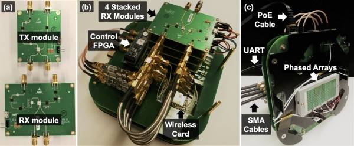

Tim Woodford
PhD Candidate — Wireless Sensing and Networks
UC San Diego
Multispectral Sensing
Physics-based techniques enable new sensing and communications modalities by fusing information obtained at multiple wavelengths.
Wireless Systems
Real-world tests of mmWave cellular network algorithms and infrastructure using modified COTS devices.

mmWave SDR
Custom SDR development for cutting-edge mmWave platforms leveraging commodity components for low cost.
Published Work
Mosaic
Mosaic enables ubiquitous sensing around obstructions in automotive applications by leveraging many irregularly-shaped reflectors available near intersections. We achieve sub-meter NLoS sensing accuracy using only small lamp posts as NLoS reflectors, and more than triple the availability of NLoS sensing paths in real-world tests at representative intersections.

SpaceBeam
Spacebeam substantially reduces or eliminates mmWave beam selection overhead overhead by using out-of-band infrared measurements of the surrounding environment generated by a LiDAR sensor. We demonstrate that this approach reduces beam-selection overhead by over 95% in indoor multi-user scenarios, reducing network latency by over 80% and increasing throughput by over 2x in mobile scenarios.
M-Cube
M3 is a low-cost mmWave massive MIMO leveraging reverse-engineered, off-the-shelf components. Up to 8 phased arrays with 32 elements each. Now shipping to academic labs around the world.

Open Source
M3 Phased Array Controller
A real-time phased array control device emitting a reverse-engineered version of Qualcomm's 60 GHz phased array control protocol. Integrates with standard software-defined radios, and easily extended for custom SDRs. Controlled via a simple serial interface, with an easy-to-use Matlab interface.
Matlab Interface for High-End USRPs
Matlab's built-in USRP interface tends to lag behind the latest UHD version, and lacks key functions needed for M3. My USRP interface interfaces with your UHD version of choice, and includes the GPIO features needed for the real-time phased array control features of M3.

macOS Utilities
Simple macOS utilies to convert SMB share path formats, detect file corruption, and turn Youtube channels into podcasts.